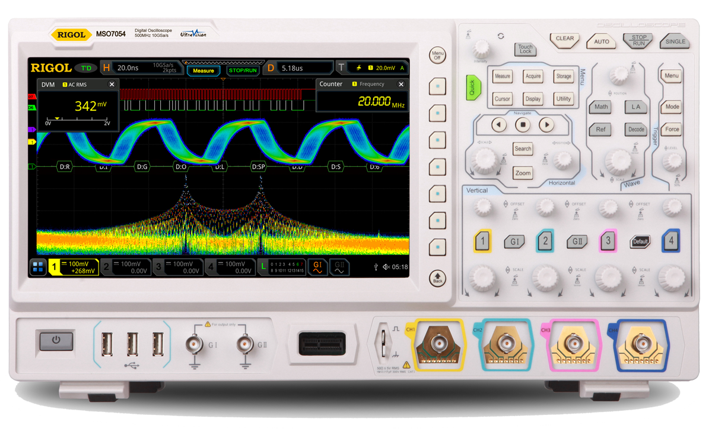

Физические принципы работы осциллографа
Назначение осциллографа
Осциллограф — это прибор. Он предназначен для наблюдения, измерения и анализа электрических сигналов. Прибор позволяет визуализировать изменения напряжения во времени.
Принципы работы осциллографа
Работа осциллографа основана на следующих принципах:
- Захват сигнала: Осциллограф преобразует сигнал. Он превращает электрический сигнал в визуальное представление. Обычно это график напряжения от времени.
- Развертка сигнала: Электронный луч сканирует экран. Движение луча происходит от левого края к правому. Это позволяет отображать временной интервал сигнала.
- Синхронизация: Осциллограф использует триггерные механизмы. Механизмы стабилизируют отображение сигнала. Это обеспечивает четкость изображения.
Физические законы
Работа осциллографа базируется на законах физики:
- Закон электромагнитной индукции: Закон объясняет взаимодействие полей. Изменение электрического поля вызывает изменение магнитного поля. Это важно для работы компонентов осциллографа.
- Закон Ома: Закон связывает напряжение, ток и сопротивление. Он используется для калибровки и анализа сигналов в осциллографе.
- Принцип работы электронно-лучевой трубки: Изображение создается благодаря движению электронного луча. Это движение происходит внутри трубки. Принцип подчиняется законам электродинамики.
.jpeg)
Типы осциллографов
Осциллографы делятся на аналоговые и цифровые. У каждого типа есть особенности:
- Аналоговые осциллографы: Устройства используют электронно-лучевую трубку. Они предоставляют непрерывное отображение сигнала. Это полезно при анализе динамичных процессов.
- Цифровые осциллографы: Устройства преобразуют сигнал. Сигнал из аналоговой формы переводится в цифровую. Это обеспечивает высокую точность измерений. 
Заключение
Осциллографы являются важным инструментом. Они применяются в электронике и инженерии. Устройства помогают измерять и анализировать электрические сигналы.